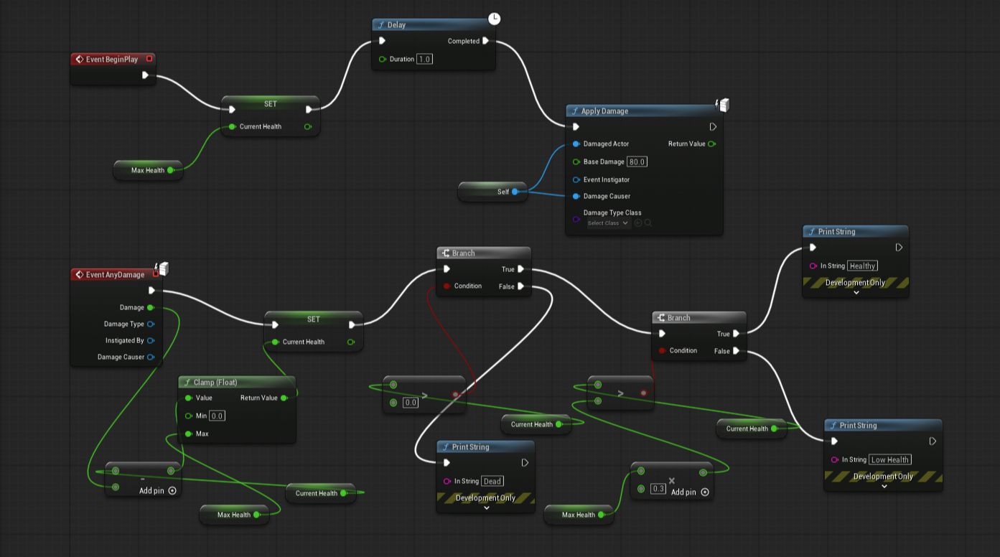
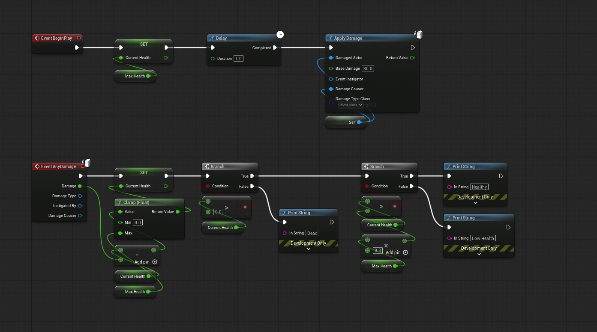

LOOMLE
LOOMLE
04 / RESIDENT AGENT SKILLS
MCP-MANAGED WORKFLOW GUIDANCE
Agent Skills Domain expertise, loaded on demand.
Resident Skills teach agents how to combine Loomle’s three core calls with domain judgment—directly through MCP, with no separate host-specific Skill installation.


SAME NODES · SAME LINKSOnly the layout changes.
01 / INSPECTREAD GEOMETRY
02 / PLANDRY RUN
03 / APPLYMOVE
04 / CONFIRMVERIFY